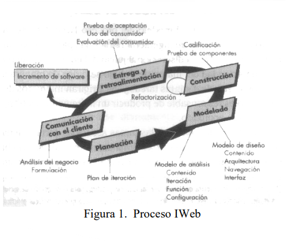

Hojas de estilo en cascada
se les denomina asi porque :
las propiedades de estilo pueden estar escritas en varios sitios (en varios lugares
de la pagina web o de estilo) dependiendo el sitio, afectan a mas o menos elementos.
Cuando un elemento esta contenido en otro por (ejemplo un parrafo
dentro deuna .
CSS es un estándar diseñado principalmente para separar los atributos presentaciones (como el color de fondo,
el tamaño de la fuente o la sangría)
del contenido. Aunque éste puede trabajar con muchos tipos de documentos, es mayormente utilizado como una
forma de proveer información presentacionales en páginas web.
La separación entre contenido y presentación mejora la flexibilidad, permitiendo
a los autores definir un único conjunto de estilos que miles de documentos utilizarán, reduciendo así el tiempo y trabajo
que se debe invertir en cada actualización. Asimismo, la implementación de CSS permite a un documento ser exclusivamente
semántico, al liberarlo de la necesidad de usar elementos presentacionales.
https://www.htmlquick.com/es/tutorials/css.html#concept
Regla de estilo
Asocia una etiqueta HTML con su aspecto
Para cada etiqueta HTML el navegador determina el aspecto a partir de la/sregla/s aplicable/s. Si no hay ninguna, se usa un estilo “por defecto”
¿Dónde colocar las reglas de estilo?
a) En un fichero aparte (por convenio extensión .css)
Hay que vincular en el HTML el CSS asociado
b) Incluir el código CSS en la cabecera
c) En el atributo style de una etiqueta
Recomendado únicamente si el estilo se usa una sola vez
Solo se especifican las propiedades
javascript:v (htt2)

frameworws css
El Framework Web dispone de las siguientes
funcionalidades: Proceso de autenticación,
administración de roles y de usuarios, creación y
administración de formularios, generación de formularios
a partir de tablas, manejo de listas de valores y gestión de
registros.
Un framework agrega funcionalidad extendida a un lenguaje de programación, automatiza muchos de los patrones de programación para orientarlos a un determinado propósito, proporcionando una estructura al código, mejorándolo y haciéndolo más entendible y sostenible, y permite separar en capas la aplicación. En general, divide la aplicación en tres capas:
• La lógica de presentación que administra las interacciones entre el usuario y el software.
• La Lógica de datos que permite el acceso a un agente de almacenamiento persistente u otros
• La lógica de dominio o de negocio, que manipula los modelos de datos de acuerdo a los comandos recibidos desde la presentación.
Los Web Framework [3] pretenden facilitar el desarrollo de Aplicaciones web (Sitios web, intranets, etc.). Actualmente, PHP es conocido por su simplicidad y es ampliamente usado en este campo del desarrollo de software web. También es común el uso de otros lenguajes “de scripting” o interpretados como Perl, Asp ó JSP que permiten mayor facilidad de uso y flexibilidad en el rápido desarrollo de aplicaciones, pero al mismo tiempo tienden a producir código de difícil sostenimiento y poco eficiente. En este ámbito, los patrones de diseño más utilizados son aquellos que se centran en separar la presentación (páginas HTML, CSS) de la lógica o backend.
diseño y creación de una estructura Framework bien definida, reusable, en la que sus componentes faciliten la creación de aplicaciones web,
provea una capa de abstracción sobre la arquitectura original, ocultándola o adaptándola para no tener que utilizar el protocolo http de
manera nativa y así acelerar los tiempos de desarrollo y mantenimiento de software. Esta solución es propuesta con base en herramientas
de software libre, aprovechando los beneficios de las licencias GPL, en pro de reducir los costos de licenciamiento, buscando la calidad
y rapidez de desarrollo que este tipo de framework brinda, facilitando de esta manera también la adquisición de sistemas como estos por
empresas pequeñas. Los DreamWorks ofrecen un alto grado de reutilización –mucho más que con clases individuales-. En consecuencia,
si una organización está interesada (¿y quién no lo está?) en incrementar su grado de reutilización del software, entonces debería
enfatizar la creación de frameworks1 .(htt3)
Para el desarrollo se adoptó un proceso secuencial con orientación IWeb; por su estructura, en este tipo de proyectos se puede sacar
provecho a su organización. El proceso genérico del marco de trabajo – comunicación, planeación, modelado, construcción y
despliegue- es aplicable a la IWeb [5]. Estas cinco actividades del marco de trabajo se refinan en un conjunto de tareas del
IWeb que se adaptan a las necesidades del Framework Web. Se aplicaron empleando un flujo del proceso incremental, como se muestra
en la siguiente figura.
